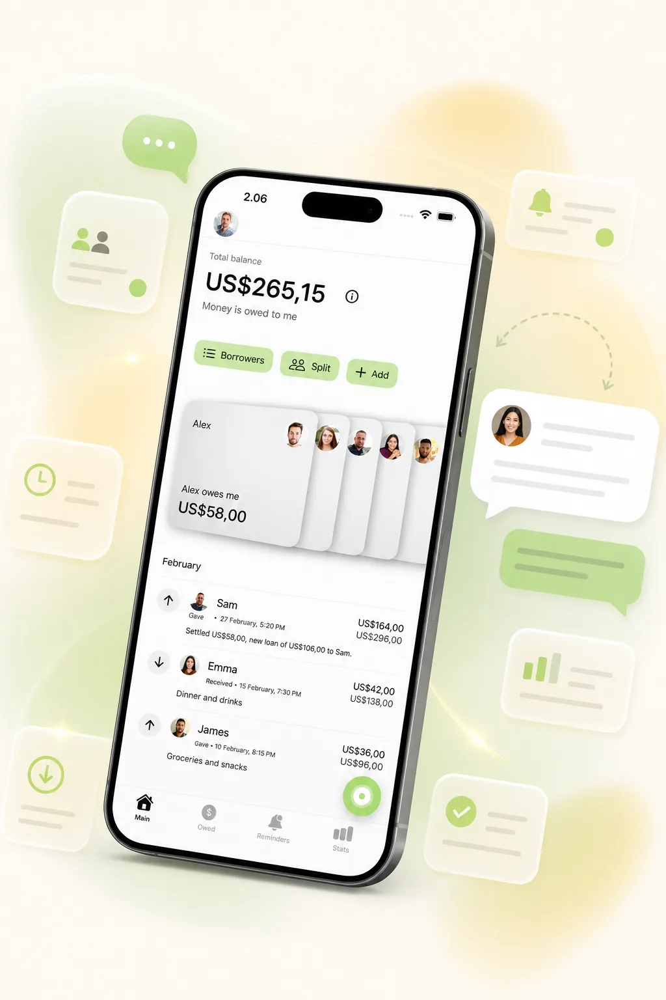

App to Track Money Owed
An App to Track Money Owed Without Awkward Follow-Ups
Money owed gets stressful when the amount lives in your memory, a note, or a half-forgotten chat thread. One person paid for dinner, someone borrowed cash, a partial repayment happened later, and now the hard part is remembering the real balance before you follow up.
YouOweMe helps you track what people owe you and what you owe them with one running balance, a Relationship Timeline, Loan Records for specific loans, repayment history, reminders, partial repayments, and Money Conversations for clearer follow-up or repayment-update messages.
Not sure when to follow up or send a repayment update? Read our guide. If you owe money and already know you need more time, use how to send a repayment update when you need more time.
Instead of re-reading messages or guessing what changed, you keep one clear record of the balance and the conversation around it.
If the amount comes from one shared bill, the free Split Expense Calculator can help you calculate who owes whom first. Need the wording before you start tracking? Read how to remind someone they owe you money politely, use the free Polite Payback Reminder Generator for a customized message, or browse the Repayment Reminder Text Examples for ready-made templates. If someone already sent part of what they owe, read the partial repayment follow-up guide before asking about the remaining balance. If someone has already paid and you only need to confirm the repayment, use the free Repayment Receipt Generator.
Works offline • No mandatory sign-up • Face ID / Touch ID lock

When it is more about support than follow-up
If someone helped with rent, groceries, bills, or other temporary support - and the goal is to keep the arrangement clear without adding pressure - start with the Temporary Financial Support Tracker instead.
If the support has just been agreed and you only need a simple written note, use the Temporary Financial Support Record Template to capture what was covered, what should happen next, the check-in date, and the next step.
If you already know the amount and only need to propose repayment in steps, use the Payment Plan Calculator first, then track the real repayments in You Owe Me.
If you are the person asking for temporary help before any balance exists, start with the guide on how to ask family for temporary financial help. It gives message templates for asking clearly and setting repayment expectations without making the conversation awkward.
Track temporary supportBefore money changes hands
Sometimes the best money-owed record is the one you never need to create. If someone asks to borrow money and you already feel uncomfortable, saying no clearly may protect the relationship better than a reluctant yes.
Use the guide on how to politely say no when people ask for money for copyable scripts before you decide whether to lend.
Read the saying-no guideIf you are looking for an app to track money owed
Some people search for an app to track money owed. Others search for an IOU app, a who-owes-me-money app, a personal debt tracker, or a way to track borrowed money between friends. The job is the same: keep the balance clear enough that the next message does not start from guesswork.
YouOweMe is built for real-life back-and-forth balances, not only formal loans. It works when an amount changes over time, repayments are partial, the relationship matters, and you need a record plus a calm way to follow up.
If you are deciding between a group expense app and a private money-owed record, compare YouOweMe with Splitwise before choosing the system you want to maintain.
Who this is for
An app to track money owed is most useful when the same balance may change, get repaid in parts, or become awkward if nobody keeps a clear record.
Friends and personal IOUs
For dinners, tickets, rides, small loans, travel costs, and everyday payback that people honestly forget. If the money owed comes from shared rent, utilities, groceries, or household bills, see the roommate expense tracker.
Good fit for: money friends owe you, money you owe friends, small informal loans, and delayed payback.
Family members
For reimbursements, purchases made on someone else's behalf, recurring family costs, and balances that need calm structure. If the money is mainly parent bills, subscriptions, or family reimbursements, see how to track money you pay for elderly parents. If you want a manual starting point for parent bills, sibling reimbursements, or family purchases, download the free Family Reimbursement Tracker Template. For recurring parent bills, partial repayments, and ongoing family balances, see the Family Reimbursement Tracker solution.
Good fit for: parents, adult children, siblings, shared bills, and family repayments.
Partners and close relationships
For everyday balances where you want clarity without turning the relationship into scorekeeping.
Good fit for: uneven purchases, travel, groceries, short-term cover, partial repayments, and partner-specific shared spending.
Small client or side-work balances
For simple outstanding payments where you need a private record and polite follow-up, not a full accounting system. For the dedicated workflow, see Simple Client Payment Records.
Good fit for: small balances, reimbursable purchases, informal client repayments, and payment history.
What usually breaks
Most money-owed tension starts small. The problem is that memory, notes, and chat messages do not behave like a reliable balance.
The amount lives in memory
You remember the general situation, but not the exact total, date, or what changed after a partial repayment.
Partial repayments muddy the balance
Someone pays back part of what they owe, but the remaining amount is never written down clearly.
If you need to ask about what is still open, use this guide to follow up after a partial repayment without making the message feel ungrateful or vague. If the remaining balance should be repaid gradually, create a repayment plan before you send the update.
Payments arrive without context
Someone sends money, but later you are not sure whether it covered dinner, tickets, part of a loan, or the final balance. A simple repayment receipt can confirm what was received before the record gets fuzzy.
Chat history is not a ledger
Messages get buried under normal conversation, and the important numbers become hard to find later.
Reminders get delayed
The longer you wait, the more a simple follow-up starts to feel like a bigger conversation.
Both sides remember different versions
Without a shared record, the conversation can become about whose memory is right instead of what actually happened.
How YouOweMe helps you track money owed
The goal is not to make personal money feel formal. The goal is to keep enough clarity that repayment and follow-up stay easier.
Log the amount when it happens
Add what was borrowed, paid for, reimbursed, or covered so the balance does not depend on memory later.
Keep one visible running balance
See who owes whom right now without rebuilding the story from old messages. When you need older context, scroll back and see the balance around the entry you are reviewing.
Separate specific loans when needed
One person can have everyday IOUs and a larger loan at the same time. Loan Records let you keep a car loan, rent deposit, client project, family bill, or repayment plan in its own focused balance while everything still counts toward that person’s full total.
Track partial repayments
When someone pays back part of the amount, update the history and keep the remaining balance clear. For the wording side of the problem, see what to say when someone paid only part.
Set reminders when timing matters
Use reminders for payback dates, overdue balances, or situations you do not want to keep carrying in your head.
Write calmer follow-up messages
Money Conversations can help turn the real balance and history into a clear message in a tone that fits the relationship. Need a quick manual script first? Read how to remind someone they owe you money politely, use the Polite Payback Reminder Generator for a customized message, browse the repayment reminder text examples, or use the borrower-side repayment update guide when you need more time.
When the balance is overdue or ignored, the confrontation guide shows how to become clearer without turning the message into an argument.
Review the Relationship Timeline
If money with the same person includes borrowing, repayments, shared costs, statements, or follow-ups over time, Timeline keeps those events together so the next conversation does not start from memory.
What people actually track
Personal IOUs
- Money lent
- Purchases covered
- Unpaid balances
- Informal loans
- Specific Loan Records
Repayments
- Partial repayments
- Promised dates
- Overdue balances
- Remaining amount
Follow-ups
- Reminders
- Repayment updates
- Calm messages
- Timing clarity
Long-running balances
- Recurring entries
- Simple client balances
- Larger loans with their own remaining balance
- Family reimbursements
- History over time
Why it works better than notes or chat history
Notes and chat messages can work for one tiny favor. They break down when money owed becomes ongoing, partial, or emotionally awkward.
When the system is notes or chat history
- The current balance is easy to miss
- Old numbers get buried
- Partial repayments are hard to reconstruct
- Reminders start from vague memory
- The other person may not see the same context
When the system tracks money owed
- Amounts and repayments live in one history
- The current balance stays visible
- Reminders connect to real context
- Follow-up messages can include a clear breakdown
- Less mental effort is required before you reach out
The better system is the one that keeps the balance clear before the conversation gets heavy.

What this looks like in real life
A friend pays back part of an IOU and the remaining balance stays visible.
A family reimbursement tracker fits recurring family subscriptions.
A partner covers groceries while you cover a larger cost later.
A trip balance turns into a calmer follow-up based on the actual amount.
Why people keep using it
The value is not only the math. It is the relief of having a clear balance, a visible history, and a calmer next message.
Easier loan and IOU tracking
Users describe YouOweMe as an easier way to track money they have loaned or are owed, with less stress around follow-ups.
Useful for family and partner repayments
Users mention managing money for elderly parents, partners, recurring charges, and repayments in one place.
Simple enough to keep using
Users call out fast transactions, multiple currencies, reminders, and recurring entries as reasons the app stays practical.
Based on review excerpts already featured on the site.
Frequently asked questions
What is an app to track money owed?
An app to track money owed keeps a record of who owes whom, what the money was for, repayments, partial repayments, reminders, and the current balance. The goal is clarity without rebuilding the story from memory.
Is YouOweMe an IOU app?
Yes. YouOweMe works as an IOU app for informal loans, shared purchases, reimbursements, and ongoing personal balances between people.
Can I track partial repayments?
Yes. You can log repayments as they happen so the remaining balance stays visible instead of getting lost in memory or chat history.
Can I track multiple loans with the same person?
Yes. Loan Records let you keep specific loans or repayment plans separate while still keeping everything connected to the same person’s full balance and history.
Can it help me ask someone to pay me back?
Yes. Money Conversations can help generate follow-up messages based on the real balance and history, in a tone that fits the relationship.
Can I track money I owe someone else too?
Yes. YouOweMe can track money owed to you and money you owe, and repayment-update messages can help keep trust clear when you are the one paying back.
Is this better than using notes or chat history?
For ongoing or repeated balances, usually yes. Notes and chats are easy to forget, hard to update after partial repayments, and not built around the current balance.
Does the other person need the app?
Not always. If you share a secure summary link from Money Conversations, the other person can view the context without installing the app.
Can I use it for client balances?
Yes. You can use it for simple small client balances, reimbursements, deposits, partial payments, and repayment history, but it is not meant to replace a full accounting, payroll, tax, or invoicing system. For the dedicated client workflow, see Simple Client Payment Records.
Related solutions and guides
If your situation is more specific, these are the best next places to go.
Track money owed before it turns into an awkward follow-up
If money owed keeps reappearing in your life, you do not need to keep carrying the balance in your head. YouOweMe helps you keep amounts, repayments, reminders, history, and clearer follow-up messages in one place.
Built for personal IOUs, repayments, family balances, partner spending, small client balances, and everyday payback.
Updated